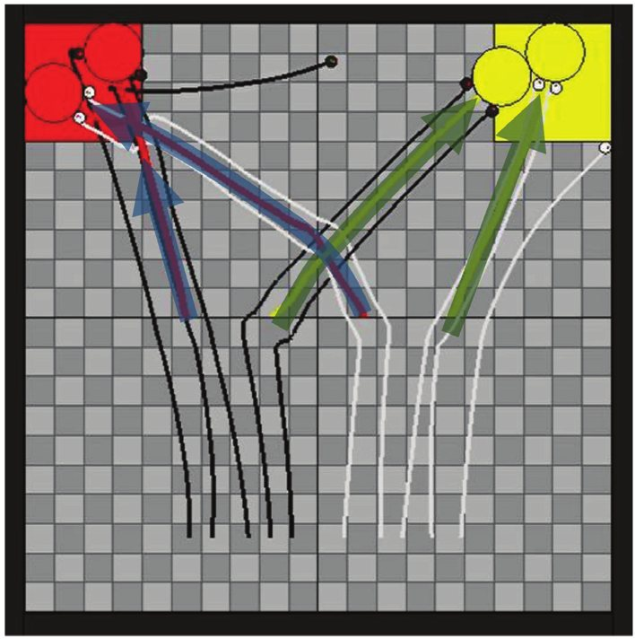
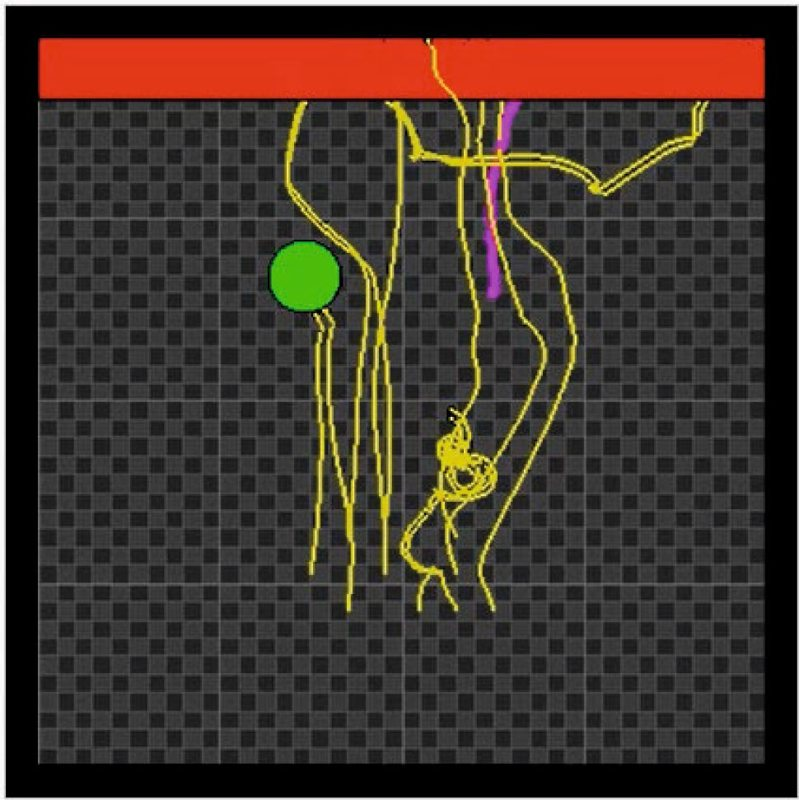
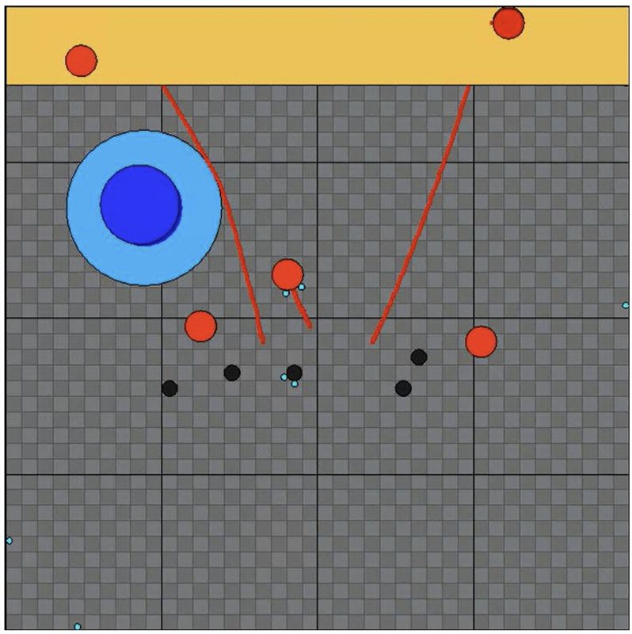
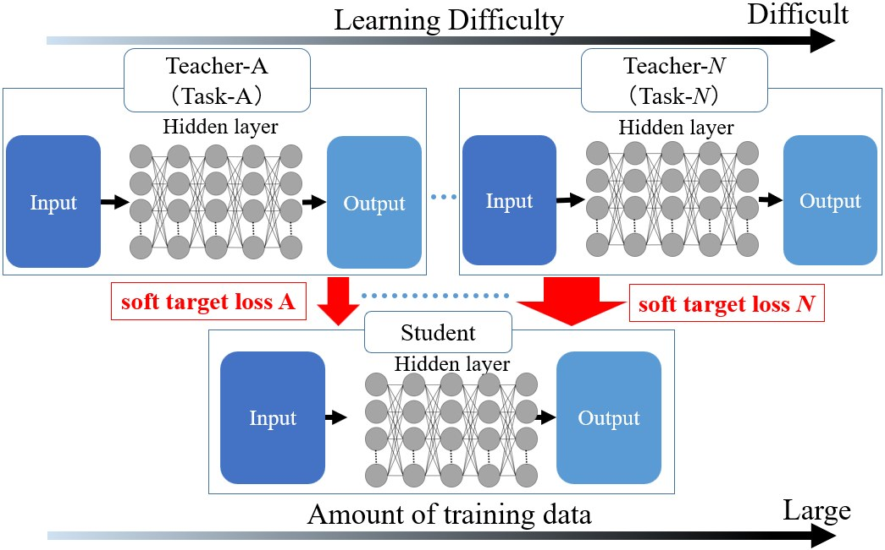

Evolving team composition
How many robots of each type does a task need? I evolve the group's makeup and perceptual abilities alongside its controllers, so the mix and the behavior are designed as one.
Research
Real robot teams are rarely identical: some sense more, some move faster, some are stronger. I ask how such heterogeneous swarms should be built and controlled, and I let evolutionary algorithms answer by searching over neural controllers and group composition together.
How many robots of each type does a task need? I evolve the group's makeup and perceptual abilities alongside its controllers, so the mix and the behavior are designed as one.
Robots with different sensing ranges move an object none of them can move alone. The Swarm Lab below is a simplified version of this task.
How the configuration of each robot's neural controller shapes what the whole swarm can explore and discover.
Evolution tends to produce specialists. Using knowledge distillation, I merge several task-specific teacher controllers (transport, obstacle avoidance, aggregation) into one compact student controller that handles composite tasks.
Now · KUAS, since Dec 2025
At the NISAR Lab I work on AI for multi-robot and human-machine systems, including medical robotics and a social robot that navigates through crowds.
IRIDIA, Brussels · 2025
Visiting PhD student at IRIDIA with Prof. Marco Dorigo, studying blockchain for decentralized coordination, trust and data integrity in robot swarms.
From my simulations
Figures from my published studies. Each line is the path of one robot or one transported object.




Interactive
A team of robots enters a building it has never seen. Three heavy packages are somewhere inside and must reach the dock. Scouts carry a 360° LiDAR and a camera: they build a shared map and spot packages, but cannot push. Workers are cheap and strong, yet have only a short-range IR ring, so they creep through unmapped space. Map data and task messages travel over a radio mesh back to the base station, and every robot must return to the charging bay before its battery runs flat. You have 120 credits: a scout costs 12, a worker 5. Design the team, run the mission, then let evolution design its own.
scout: LiDAR + cameraworker: IR + pushespackage (? = not yet found)grey haze: not yet mappedthin lines: radio mesh to basered ring: out of radio rangebar: battery
Design a team and press Run mission.
Genetic algorithm · population 8 · each design tested in 2 layouts · 10 generations · genes: scouts (workers fill the budget), radio range, crew size, exploration
bestpopulation meanarena replays the best design so far
Click any robot in the arena to see what its sensors read, what it decides to do, and how fast each wheel turns, live.
Sensors and radio
Wheels (differential drive)
Behaviour
Scores out of 100: half for the packages delivered (partial credit for distance covered), half for finishing early. The model is a simplified 2-D, rule-based simulation for illustration. In my published work the controllers are evolved neural networks and the robots are simulated with full physics (JRM 2023, ALR 2026, SWARM 2024).
PhD thesis
Evolutionary Design of Collective Behavior for Heterogeneous Swarm Robotic Systems
The thesis develops evolutionary frameworks for teams of robots that differ in what they can sense and do. Neural network controllers are optimized together with the team's composition, producing scalable policies for autonomous coordination, distributed exploration and cooperative transport, with an eye on real-world multi-robot deployment.
Full text available on request.